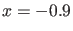
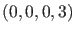
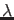
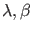
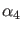
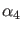

Next: Branch Point of Cycles Up: Branch Point Continuation Previous: Branch Point initialization Contents
It is easily seen that  is an equilibrium point of the system for the choice  of the parameters. From this we can start an equilbrium continuation with  (the first parameter) free.
p=[0;0;0;3];ap1=[1]; [x0,v0]=init_EP_EP(@cstr,[-0.9],p,ap1); opt=contset; opt=contset(opt,'VarTolerance',1e-3); opt=contset(opt,'FunTolerance',1e-3); opt=contset(opt,'MaxNumPoints',50); opt=contset(opt,'Singularities',1); [x,v,s,h,f]=cont(@equilibrium,x0,[],opt); first point found tangent vector to first point found label = LP, x = ( -0.143564 1.250669 ) a=1.550147e+000 label = LP, x = ( 0.393180 0.377651 ) a=-7.370472e-001 cpl(x,v,s,[2,1]);The results are plotted using the plot function cpl where the fourth argument is used to select the second and first components of the solution which are the parameter and the coordinate
We start a fold continuation from the second LP detected on the previous equilibrium curve;
and  are free in this run.
are free in this run.
x1=x(1,s(3).index); p(ap1)=x(end,s(3).index); [x0,v0]=init_LP_LP(@cstr,x1,p,[1 2],[1 2 3 4]); opt=contset(opt,'MaxNumPoints',300); [x2,v2,s2,h2,f2]=cont(@limitpoint,x0,v0,opt); first point found tangent vector to first point found label = BP1, x = ( 2.018621 0.581081 -4.709219 ) label = CP , x = ( 0.259553 1.968966 -0.090655 ) c=-8.847089e-001 label = BP1, x = ( 0.030643 1.772454 -0.127542 ) label = BP4, x = ( -0.000009 1.707401 -0.124964 ) label = CP , x = ( -0.173872 0.405524 0.608093 ) c=-2.263137e+000 label = BP4, x = ( -0.000000 0.421692 0.528995 ) Closed curve detected at step 164 elapsed time = 0.5 secs npoints curve = 164 hold on; cpl(x2,v2,s2,[2,1]);
These computations can be done by running the script cstr2.
The results are plotted using the standard plot function cpl where the
fourth argument is used to select the second and first components of the solution
which are the parameter and the coordinate  . The results can be seen in
Figure 26.
. The results can be seen in
Figure 26.
Finally, we continue numerically the BP curves with three free parameters  and  . The BP curves are started respectively from the first BP1 point ( is the branch parameter) and the first BP4 point ( is the branch parameter) detected on the previous fold curve.
The results are plotted using the standard plot function cpl where the fourth argument is used to select the coordinates. A graphical representation of this phenomenon is shown in Figure 27. In the latter is plotted versus
. The BP curves are started respectively from the first BP1 point ( is the branch parameter) and the first BP4 point ( is the branch parameter) detected on the previous fold curve.
The results are plotted using the standard plot function cpl where the fourth argument is used to select the coordinates. A graphical representation of this phenomenon is shown in Figure 27. In the latter is plotted versus  .
The labels of the plot are added manually .
.
The labels of the plot are added manually .
x1=x2(1,s2(2).index); p([1 2])=x2(end-1:end,s2(2).index); [x0,v0]=init_BP_BP(@cstr,x1,p,[1 2 3],1); opt=contset(opt,'Backward',1); [x3,v3,s3,h3,f3]=cont(@branchpoint,x0,[],opt); first point found tangent vector to first point found elapsed time = 0.8 secs npoints curve = 300 hold on; cpl(x3,v3,s3,[2,1]); x1=x2(1,s2(5).index); p([1 2])=x2(end-1:end,s2(5).index); [x0,v0]=init_BP_BP(@cstr,x1,p,[1 2 3],4); opt=contset(opt,'Backward',1); [x3,v3,s3,h3,f3]=cont(@branchpoint,x0,[],opt); first point found tangent vector to first point found elapsed time = 0.8 secs npoints curve = 300 hold on; cpl(x3,v3,s3,[2,1]);These computations can be done by running the script cstr3.